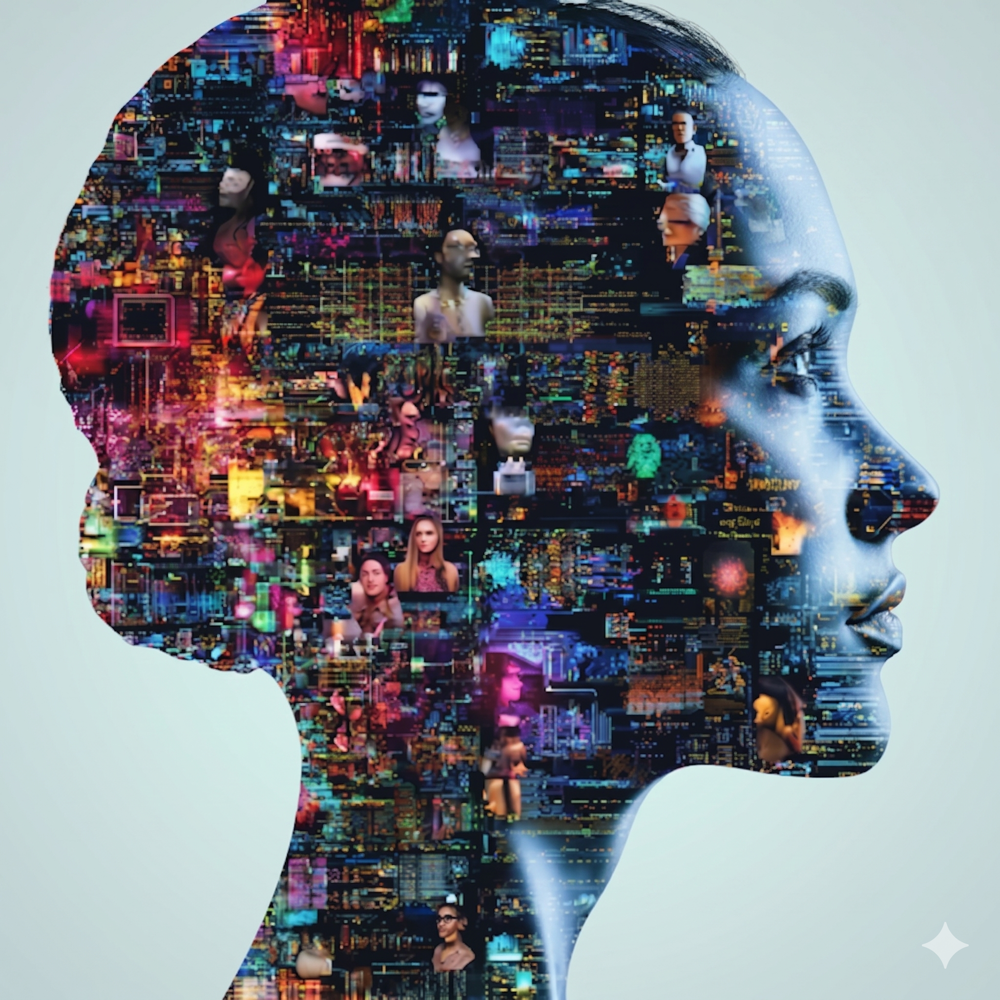

Sitter din viktigaste kunskap fast i dokument ingen läser — eller i ditt huvud som inte går att skala?
KLONA DIN EXPERTIS -> SYNLIG, BEGRIPLIG, EXEKVERBAR
SKAPA DIN AI CAPABILITY HUB
Engagerande artefakter
Förvandla tunga dokument/kunskap till Appar, Storytelling med Podcasts, videor, presentationer, infografik, rapporter och interaktiva frågor/svar.
Klona din expertis
Bygg din "Digitala DNA och Hjärna". Lösa dokument- transkriptioner, PDF, anteckningar - omvandlas till automatiserad och navigerbar wiki
Vägledning i realtid
En proaktiv guide med "ögon och öron" som hjälper användaren att navigera på din sajt eller i din applikation.
Appointment setters
En AI Voice Agent som ger kundservice eller kvalificerar leads och bokar möten med dina säljare dygnet runt
EXPONERA DIN KUNSKAP
Gör den synlig, begriplig och interaktiv
Artefakter: Väck liv i din expertis. Förvandla tunga dokument, kunskap till Appar samt levande Storytelling med Podcasts, videor, presentationer, infografik, rapporter och interaktiva frågor/svar dygnet runt
AI Guide: En proaktiv guide med "ögon och öron" som hjälper användaren att navigera i real tid på din sajt och som kan förklara hur din tjänst eller applikation fungerar
AI Voice Agent: En intelligent Voice Agent som kan prata med dina potentiella kunder, kvalificera dem och boka säljmöten dygnet runt
Läs mer ..STRUKTURERA DIN KUNSKAP & KLONA DIN EXPERTIS
Gör den navigerbar och användbar
Strukturera kunskap: Bygg en AI driven Wiki: som gör kunskap lätt att hitta, förstå och använda i real tid

DNA: Ditt digitala DNA innehåller dina egna “kromosomer” som gör det möjligt att klona din expertis och agera med din identitet.
Hjärna:Din digitala hjärna kan tänka, agera och fatta beslut enligt dina principer och riktlinjer.
Läs mer ..